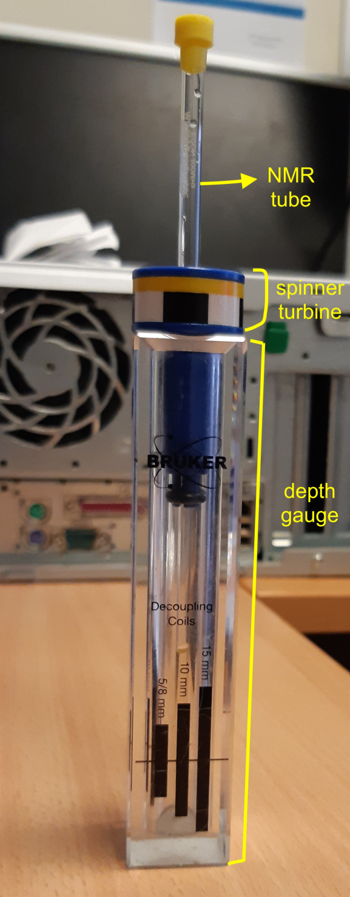
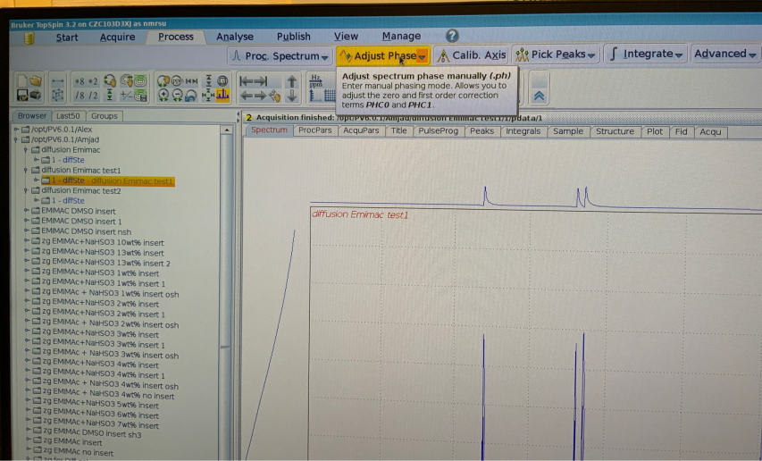

Authors: Amjad Alghamdi, Pallavi Kumari and Dan Baker
This document includes instructions on how to set up and run diffusion measurements using the Bruker NMR, as an aid for people who have already been trained. This document does not replace training.
Measurement setup

Insert the NMR tube inside the blue spinner turbine and measure the sample height using the depth gauge (as shown in the figure). Remove the tube from the depth guage with spinner turbine still attached to it. Press the lift button on the BSMS unit and a compressed air will start coming out from the bore of the magnet (the sound of it is loud enough to hear). Now, insert the NMR tube/spinner into the the bore of the magnet. Then, click “lift” again on the BSMS unit to lower the tube.
Open TopSpin software (if it isn't already).
Pick a pre-existing diffusion measurement and drag the filename from the file explorer into the main window.
Click Start->Create Dataset and fill out the New... dialogue box:
Name will be the name of the measurement folder
EXPNO and PROCNO are arbitrary
Make sure use current parameters is selected.
Change DIR to be your named folder.
Type "diff" into the command line.
Enter the expected diffusion coefficient
Wobble probe ("wobb" on command line)
Type "zg" to start measurement.
Process FID/spectra
The FIDs (free induction decays) should decrease as a function of increasing field strength. If the FIDs are all the same height and the magnitudes are relatively large (1e3 or so) then you should go back to 3. and decrease the expected diffusion coefficient by a decade. If the FIDs are all a similar height and the magnitudes are relatively small, you should increase the expected diffusion coefficient by a decade.
Fourier transform the FIDs in the F2 direction by typing "xf2" in the command line.
If required, calibrate the ppm axis by going to Process->Calib. Axis and picking a peak with known ppm. Enter this into the F2 box in the dialogue that pops up.
Phase the spectra by going to Process->Adjust Phase

Add three spectra to the phase list by right clicking on the graph in different row positions. Choose rows at lower field values (maximum intensity), such as 1, 3 and 6. Once these have been added, click R in the window ribbon.
Click and hold 0 in the window ribbon and move the mouse up and down to adjust the 0th order phase until the baseline is flat and the peaks are well defined. You might then also need to adjust the 1st order phase in a similar manner by clicking 1 and moving the mouse up and down.
Once happy, click the return and save button (Save icon with return arrow in the ribbon).
Click return
Determine diffusion coefficient
Go to Analyse->Dynamics->T1T2(t1t2)
Click FID and select Spectrum from the resulting dialogue box. Choose Slice Number = 1-3.
Click Peaks/Ranges and select Manual Integration. Click Ok in the resulting dialogue box.
Select each peak to analyse by dragging the mouse over each peak. One all peaks have been selected, click the Save regions button (save icon with subscript A) and click Export Regions to Relaxation Module and .ret.
Click Relaxation in the top banner.
Click the autoscale button if you do not see any data.
Click the >> button to fit all peaks at once in either Intensity or Area.
To save the fit report (including values of D), click i (information symbol) and then select File->Save As. The convention is to save in home/NMRSU/NMR data/Your name/filename.txt.